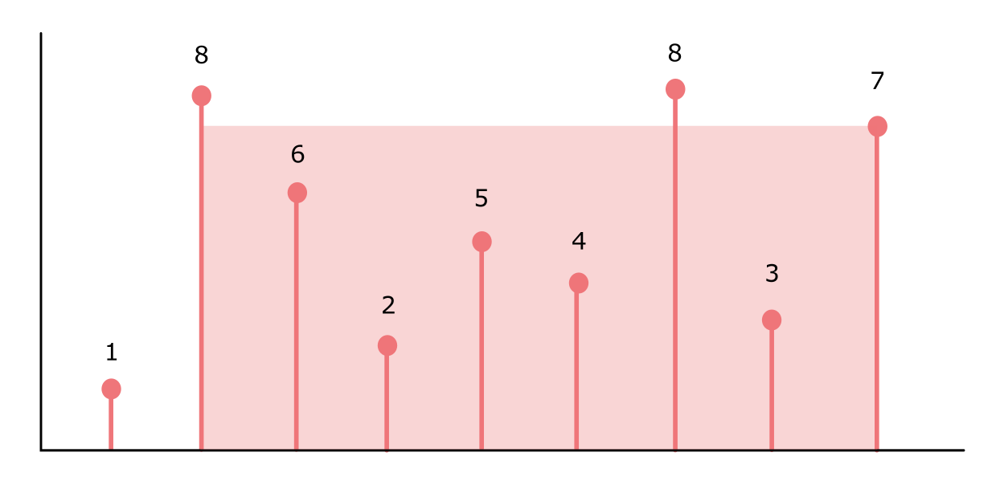

We are given an integer array height of length n. Each element of the array corresponds to a vertical line (of n total lines) drawn from the horizontal axis such that the i-th line’s two endpoints are (i, 0) and (i, height[i]) (see the figure below).
Find two lines which, together with the x-axis, form a container which can hold the most water. Return the maximum amount of water this container can store.
Example

Container with most water
Input: height = [1,8,6,2,5,4,8,3,7]
Output: 49
Explanation
The above vertical lines are represented by array [1,8,6,2,5,4,8,3,7]. In this case, the max area of the water (highlighted section) the container can contain is 49 (in units of area).
Brute-Force Solution
The brute force solution to this problem checks each pair of vertical lines (or each subset of size \(2\)). Since the order of any given pair in the subset does not matter, this solution has time complexity \({O \left ({n \choose 2} \right )= O \left (\frac{n(n-1)}{2} \right ) = O(n^2)}\) where \(n\) is the length of the height array.
The Two Pointer Solution
The non-brute-force solution (i.e. the Two Pointer Solution), follows almost trivially after noticing an optimal substructure to the problem. This optimal substructure allows us to remove certain pairs \((i,j)\) entirely from consideration, thereby reducing the number of pairs to be considered. The main difficulty lies in noticing and proving this optimal substructure.
Optimal Substructure
Let \(h(i)\) denote the height of the \(i\)-th vertical line.
Let \(a(i,j)\) denote the area of the container formed by the pair of vertical lines \((i,j)\).
Let \(maxArea(i,j)\) denote the maximum area formed by the lines \({i,...,j}\) – that is the output of the procedure on the subarray height[i:j].
Suppose, without loss of generality, \(h(1) \leq h(n)\) (that is, the first line is shorter than the last). Then, the problem has top-down optimal substructure:
\[maxArea(1,n) = max\{a(1,n), maxArea(2,n)\}\]
Note
This optimal substructure also exposes an obvious dynamic programming approach to the problem (we simply consider the sub-problems of sizes \(n-1\), \(n-2\), and so on). However, in order to minimize the complexity, we offer a tabulation approach instead — the Two Pointer Solution.
Proof of Optimal Substructure
For the initial pair \((1,n)\) where \(h(1) \leq h(n)\) we have \(a(1,n) > a(1,k) \ \ \forall k\). This is because we’re starting out from the widest container formed by \({(1,n)}\) and considering containers of decreasing width formed by the pairs \({(1, n-1), (1, n-2), ..., (1,2)}\).
In case \({h(k) > h(1)}\) for some \({n \geq k > 1}\) the area of the container formed by \({(1,k)}\) is still determined by \({h(1)}\), except now it’s less wide. Whereas if \({h(k) < h(1)}\) the area of the container decreases not only in width but also in height.
In both cases we have \({a(1,n) > a(1,k)}\) which means in general \({a(1,n) > a(1, k) \ \ \forall k}\).
Therefore, we may omit the first vertical line from consideration and consider the subproblem on the indices \({2,...,n}\). The overall optimal solution will then be \(maxArea(1,n) = max\{a(1,n), maxArea(2,n)\}\) as was the claim.
The Two Pointers Algorithm
At this point, the Two Pointers Algorithm is almost trivially easy to implement:
Initialize two pointers, ‘left’ and ‘right’, at the first and last index respectively.
While the pointers do not intersect:
Calculate the area of the container formed by the pointers and determine if it’s the maximum area encountered so far
Keep the position of the pointer of the vertical line that’s longer fixed
Advance the pointer of vertical line that’s shorter towards the fixed pointer
The Code
def maxArea(height) ->int: i, j =0, len(height) -1 water =0while i < j: water =max(water, (j - i) *min(height[i], height[j]))if height[i] < height[j]: i +=1else: j -=1return water# Example inputheights = [1,8,6,2,5,4,8,3,7]print(f'The container with most water has area: {maxArea(heights)}')
The container with most water has area: 49
Conclusion
With some raw intuition it would’ve been possible to come up with the Two Pointer Solution without identifying and proving the optimal substructure at all. However, without a full justification the solution simply feels unrewarding. With some problems it’s not enough to solve them, there is more insight to be gained by understanding why the correct solution is, in fact, correct.